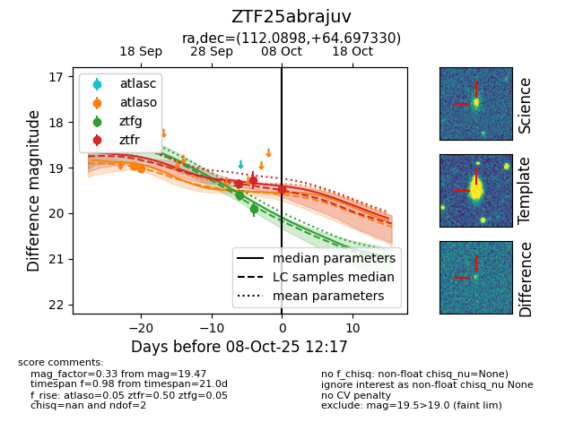
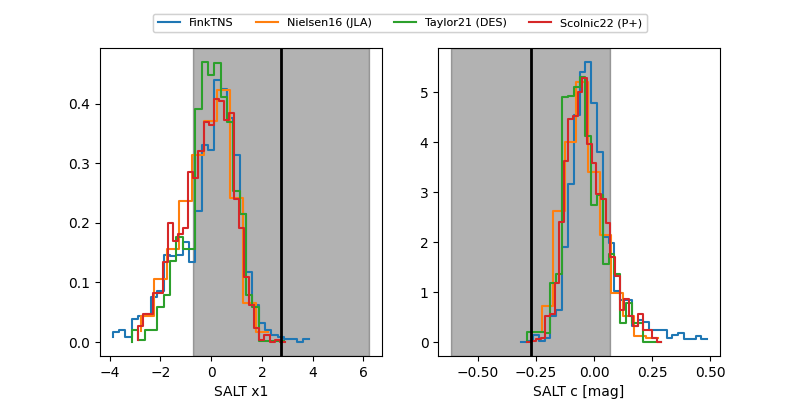

FINK: ZTF25abrajuv
Lasair: ZTF25abrajuv
ALeRCE: ZTF25abrajuv
ZTF25abrajuv (ztf,fink)
equatorial (ra, dec) = (112.0898,+64.69733)
galactic (l, b) = (151.5448,+28.24563)


last atlaso=19.02, ztfg=19.91, ztfr=19.47
2 atlaso, 2 ztfg, 3 ztfr detections